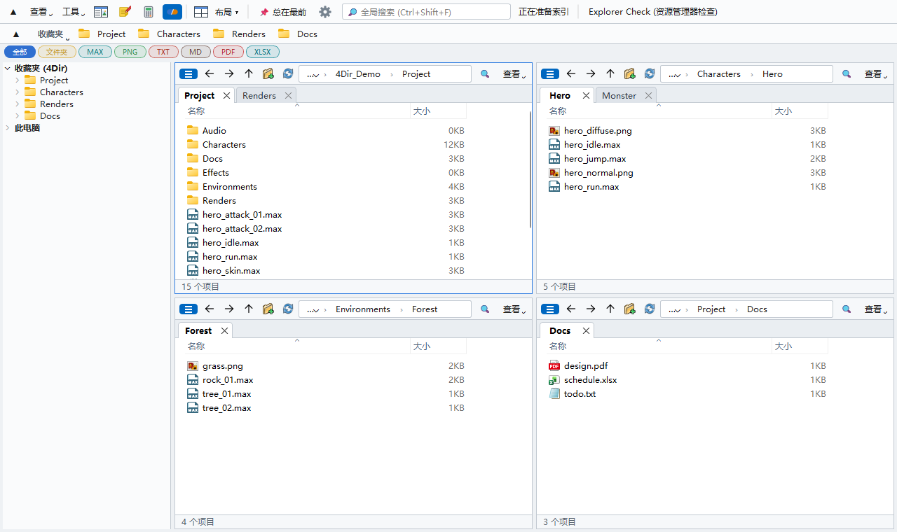
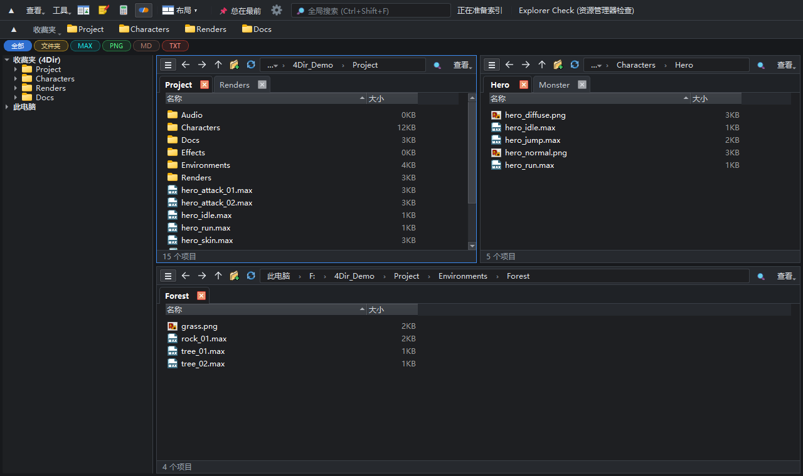

比 Windows 资源管理器更快的多窗格文件管理器！！
适用于 Windows 10/11 的免费文件管理器。无需安装，解压即用。
Windows 10/11 64 位 · 47 MB · 2026-11-06 · 免费
支持 4Dir
4Dir 免费且无广告。如果它为你节省了时间，一点小小的捐助能让更新持续下去。
v0.9.108 更新内容
- 视频预览：视频在预览窗口中播放，并可像 GIF 一样逐帧移动（|◀ ▶|、← →、空格键播放/暂停），带帧滑块和帧条、当前/总时长与帧率、声音（静音按钮）和自动播放开关。手机（Galaxy、iPhone、相机）显示在“此电脑”中，可浏览并复制、拖放、粘贴、重命名或删除文件。顶部按钮可在所有窗格显示或隐藏类型按钮栏。
- 压缩包当文件夹：双击 ZIP、7Z、RAR、TAR 即可在 4Dir 中浏览（只读），用打开、复制、拖动或 F6 取出文件。复制队列：复制、移动逐个进行，⏳ 按钮可取消或暂停等待中的任务。平铺查看：文件夹下所有文件显示在一个列表（右键空白处或工具）。查找重复文件：名称不同但内容相同——每组保留一个，其余移到回收站。空格键打开/关闭预览窗口。
- 预览窗口：预览像便笺窗口一样在独立窗口中打开，窗格大小不变；会记住位置和大小，可置顶（右键）。GIF 帧：|◀ 上一帧、▶ 播放 / ⏸ 暂停、■ 停止、▶| 下一帧，拖动帧条可滑动。列表上方的类型按钮更小、按类型着色且不会被截断——放不下的归入 +N ▾。便笺图片保持你设定的大小：点击图片并拖动角上的手柄调整。
- 便笺窗口：用 📝 按钮（或 Alt+M、工具 ▸ 便笺窗口）在独立窗口中打开便笺，窗格大小不变；显示在任务栏，可置顶。彩色便笺支持复选框（行首输入 '[] '）、项目符号（'- '）、加粗、斜体、下划线、删除线、文字颜色和字号，并显示 3/5 进度。拖动标题调整顺序，双击折叠，可置顶，按文字或颜色筛选。Ctrl+单击打开网址和文件夹/文件路径；拖入文件或文件夹即成链接；可粘贴图片。附加到文件夹的便笺会在打开该文件夹时提示；设置提醒后到时会弹出便笺窗口。删除的便笺进入回收站，可恢复。所有窗口共用便笺，自动保存。 还支持表格、编号列表（'1. '）、对齐、字间距、字体、“− 字号 +”和插入图片按钮；链接显示为蓝色。
- 图片与类型：列表上方的类型按钮栏（[全部][文件夹][JPG][PSD]…）只显示该类型（Ctrl+单击可多选）。详细信息视图可按类型分组（文件夹·JPG·PNG…）。图标视图中图片缩略图带类型标签（PSD·PNG·GIF…），文件夹以其中第一张图片作封面。预览窗格新增 GIF 帧操作（上一帧/下一帧、帧滑块与帧条、帧号与间隔、将当前帧保存为 PNG），并在 Windows 提供预览时显示文档和视频的预览。
- 工具提示：鼠标悬停在任何按钮和菜单上都会显示简短说明。可在 设置 ▸ 常规 中关闭。

功能
最多 20 个窗格
一键切换 1、2、3、4、6 窗格布局，或自定义最多 5 × 4 的网格。每个窗格都有独立的标签页。
不拖慢电脑
直接读取文件夹，不使用沉重的 Windows Shell 视图。空闲时没有定时器和轮询——可放心与 3ds Max、游戏等大型程序同时运行。
即时搜索
输入即可搜索所有驱动器上的文件名。自建索引实时更新，无需管理员权限。
SVN 状态一目了然
直接读取 .svn 显示修改/添加/冲突标记，内部有变更的文件夹显示为红色。Git、Perforce 通过 Windows 覆盖图标显示。
用起来像资源管理器
相同的快捷键、完整的 Windows 右键菜单，可与资源管理器及其他程序互相拖放。右键即可把 .webp 图片另存为 PNG 或 JPG。
便携且注重隐私
设置只保存在 4Dir 文件夹内。内置浅色/深色主题、10 种语言、批量重命名、会话恢复和资源管理器诊断。

安装方法
- 用上方按钮（或 GitHub 的 Releases）下载 zip。GitHub 上绿色的“Code → Download ZIP”只有源代码，无法直接运行。
- 右键 zip → 属性 → 勾选解除锁定 → 确定。（否则每次运行都会出现安全警告）
- 解压到任意位置，双击 4Dir.exe。（被拦截时用 4Dir.vbs）
如果出现 Windows SmartScreen：点击更多信息 → 仍要运行。
校验下载（可选）
在命令提示符中运行 certutil -hashfile 4Dir_v0.9.108.zip SHA256，结果应与下面一致：
e5fe1394569211793f93f935860c93bbd52ddf631d4b168d8fb48f3439c0c8eb
常见问题
真的免费吗？
是的。4Dir 是免费开源软件（GPL-3.0）。无广告、无需账号、无试用期。
可以在公司使用吗？
可以。4Dir 是 GPL-3.0 免费软件，公司也可以免费使用，无需授权费或注册。它无需安装即可运行，请确认公司是否允许使用便携软件。
真的比文件资源管理器快吗？
在新窗口中打开含 1,000 个文件的文件夹：4Dir 用时 0.4 秒，文件资源管理器约 2 秒。多开一个窗口增加的内存：4Dir 约 10 MB，文件资源管理器约 130 MB。同一台电脑（Windows 11，SSD）各测 5 次。单个文件夹有数万个文件时差距会变小。
会发送数据吗？
不会发送个人数据。每天只检查一次是否有新版本（可在“工具”中关闭）。
遇到问题？
工具 → 保存问题报告日志，然后点击“通过邮件发送”（或把 zip 发到 support@4dir.net）。GitHub 用户也可以提交 issue。